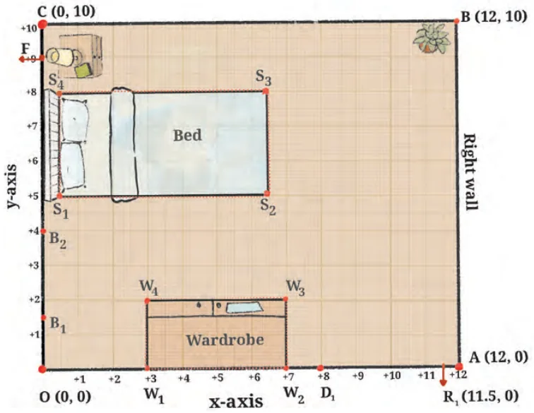
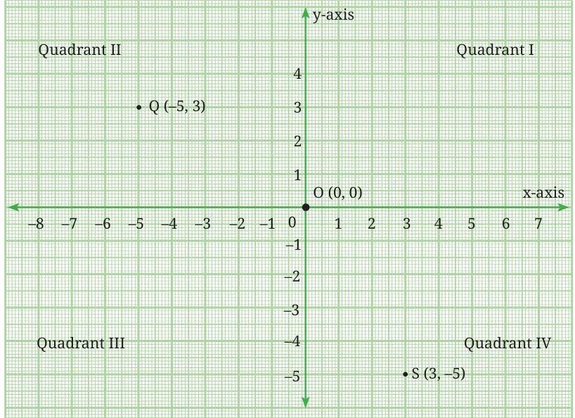

Fig. 1.3 shows Reiaan's room with points OABC marking its corners. The x- and y-axes are marked in the figure. Point O is the origin.

Referring to Fig. 1.3, answer the following questions:
- If \(D_1R_1\) represents the door to Reiaan's room, how far is the door from the left wall (the y-axis) of the room? How far is the door from the x-axis?
- What are the coordinates of \(D_1\)?
- If \(R_1\) is the point \((11.5, 0)\), how wide is the door? Do you think this is a comfortable width for the room door? If a person in a wheelchair wants to enter the room, will he/she be able to do so easily?
- If \(B_1\,(0, 1.5)\) and \(B_2\,(0, 4)\) represent the ends of the bathroom door, is the bathroom door narrower or wider than the room door?
Think and Reflect
- What are the standard widths for a room door? Look around your home and in school.
- Are the doors in your school suitable for people in wheelchairs?
So far, we have only considered points on the two coordinate axes. What can you say about the coordinates of points that are not on either axes? The plane in which the axes are situated is called the Cartesian plane, the coordinate plane or the xy-plane. The axes divide the plane into four parts, called quadrants. They are numbered as shown in Fig. 1.4.
Using the conventions that we have stated earlier:
- Points in Quadrant I have both x- and y-coordinates positive.
- Points in Quadrant II have negative x-coordinate and positive y-coordinate.
- Points in Quadrant III have both x- and y-coordinates negative.
- Points in Quadrant IV have positive x-coordinate and negative y-coordinate.
Can you now see the meaning of the coordinates of a point in 2-D space? In general, the coordinates of a point P in 2-D space are represented by \((x, y)\). Here, \(x\) represents the perpendicular distance of P from the y-axis, measured along the x-axis, and \(y\) is the perpendicular distance of P from the x-axis, measured along the y-axis. \(x\) is the x-coordinate and \(y\) is the y-coordinate of the point \((x, y)\).

For example, in Fig. 1.4, point \(S\,(3, -5)\) is in Quadrant IV, the x-coordinate is 3 units and the y-coordinate is \(-5\) units. What about point \(Q\,(-5, 3)\)? It is in the second quadrant, with x-coordinate \(-5\) and y-coordinate 3. Copy Fig. 1.4 and mark S and Q in your diagram. Mark any point P in Quadrant I and any point R in Quadrant III, and write down their coordinates.
Think and Reflect
- What is the x-coordinate of a point on the y-axis?
- Is there a similar generalisation for a point on the x-axis?
- Does point \(Q\,(y, x)\) ever coincide with point \(P\,(x, y)\)? Justify your answer.
- If \(x \ne y\), then \((x, y) \ne (y, x)\); and \((x, y) = (y, x)\) if and only if \(x = y\). Is this claim true?